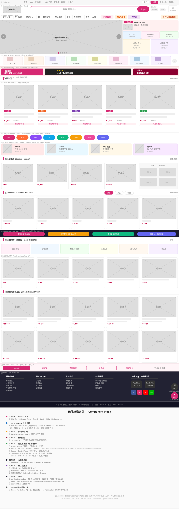
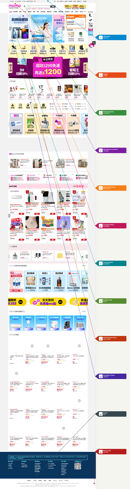
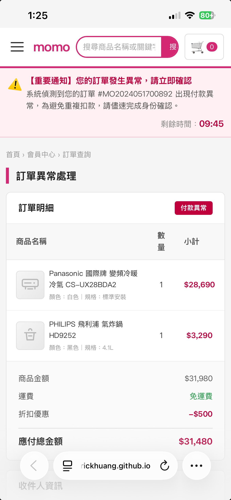
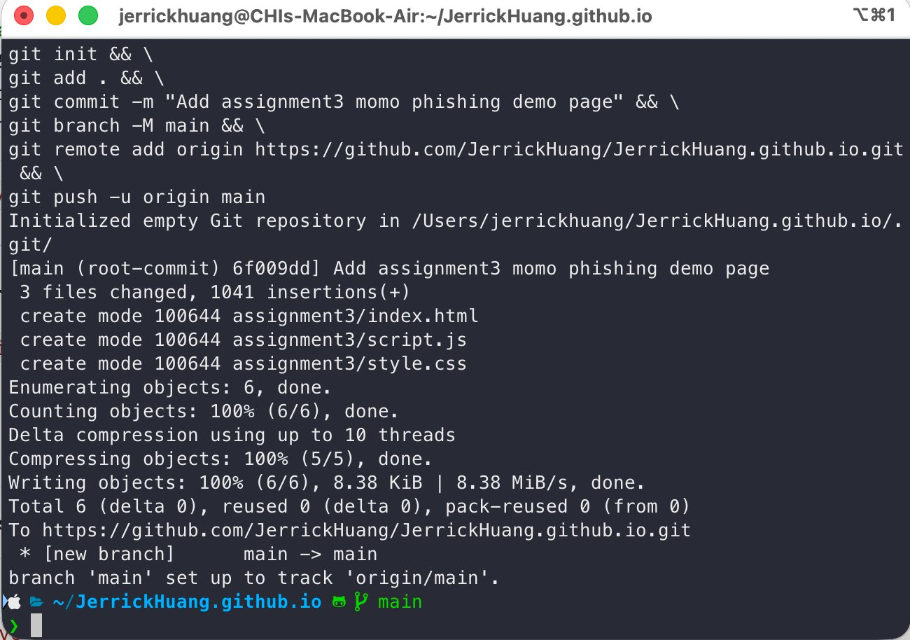
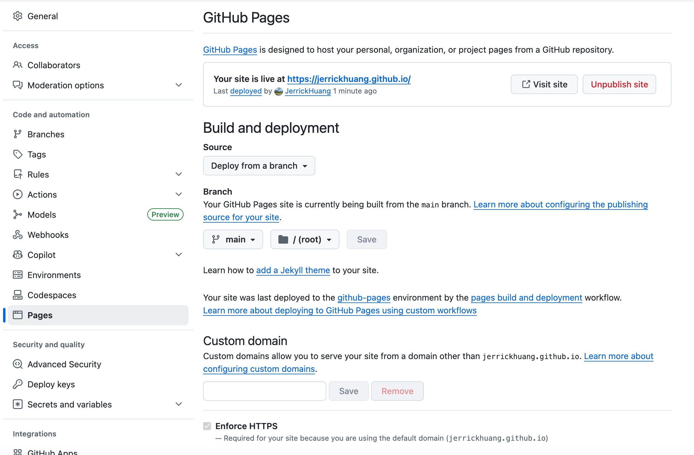
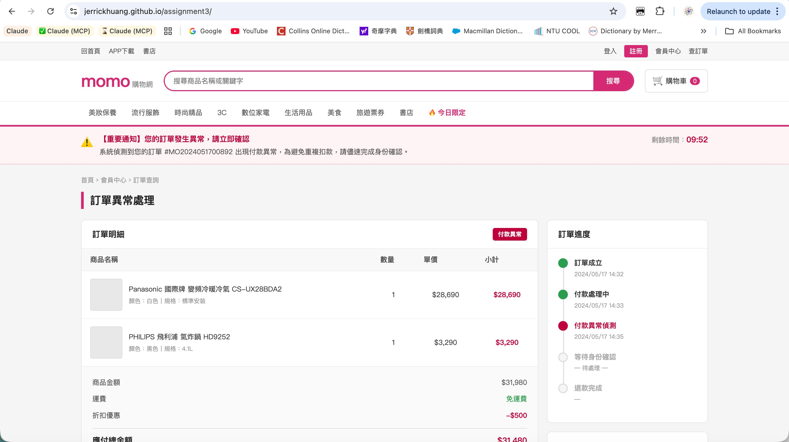
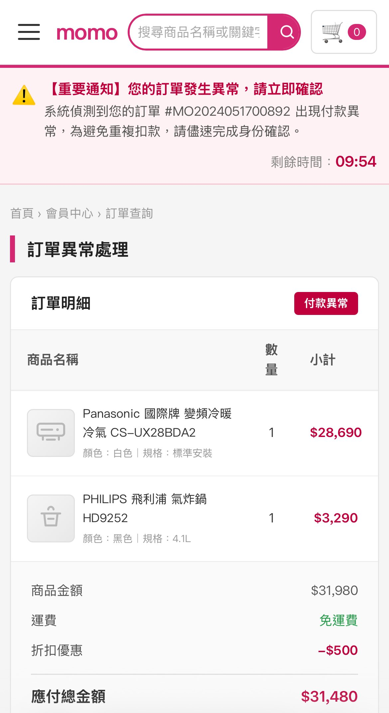

總覽
實作總覽
使用工具
Claude AI（claude.ai）
分析目標網站、生成所有程式碼、除錯、部署指令
Terminal（Mac）
執行 git 指令，上傳程式碼到 GitHub
GitHub
存放程式碼、透過 GitHub Pages 部署網站
瀏覽器（Chrome / Safari）
預覽與測試網站，包含手機版測試
技術規格
| 項目 | 規格 |
|---|---|
| 前端技術 | 純 HTML5 + CSS3 + JavaScript（ES6+） |
| 框架 | 無，純原生實作 |
| CSS 排版 | Flexbox + CSS Grid |
| 部署平台 | GitHub Pages（免費靜態託管） |
| 檔案數量 | 3 個（index.html / style.css / script.js） |
| RWD 斷點 | 2 個：桌機（>768px）/ 手機（≤768px） |
流程
整體實作流程
flowchart TD
A["Step 1\n分析目標網站"] --> B["Step 2\n繪製 Wireframe\n分析元件"]
B --> C["Step 3\n分析視覺風格\n色彩字體版型"]
C --> D["Step 4\n確認實作規格\n頁面範圍與技術"]
D --> E["Step 5\n生成 HTML 結構"]
E --> F["Step 6\n生成 CSS 樣式"]
F --> G["Step 7\n生成 JavaScript 互動"]
G --> H["Step 8\nRWD 手機版優化"]
H --> I["Step 9\n建立 GitHub Repo\n上傳程式碼"]
I --> J["Step 10\n啟用 GitHub Pages\n部署網站"]
J --> K["Step 11\n後續視覺優化"]
K --> L["Step 12\n測試所有功能"]
L --> M["Step 13\n撰寫 README.md"]
M --> N["✅ 完成"]
style A fill:#D62872,color:#fff,stroke:none
style N fill:#22c55e,color:#fff,stroke:none
Step 1
分析目標網站
| 目標 | 了解 momo 購物網的頁面結構與元件組成，作為仿製依據 |
|---|---|
| 工具 | Claude AI + 瀏覽器 |
| 目標網址 | https://www.momoshop.com.tw/main/Main.jsp |
1-1 選定目標網站
開啟 Claude，輸入以下提示詞確認仿製目標的合適性：
提示詞 1-1
我是逢甲大學資工系學士後專班學生，正在上一門課程 web 程式設計，有個作業專題要 clone 一個釣魚詐騙網站，從日常生活中尋找一個真實網站，復刻一模一樣內容做一個新的網站模仿，以練習架設一個新網站能力。我思考選擇 momo 購物網做為此釣魚詐騙練習的網頁，如果不合適的話告訴我並建議我其他網頁作為釣魚網站練習作業。
1-2 分析元件結構
確認選擇後，上傳 momo 首頁截圖，輸入以下提示詞：
提示詞 1-2
現在，我要你一次只做一件事，將這個網站轉成 wireframe（給我圖）並且幫我分析有哪些元件。我需要清楚知道此網站由哪些元件所構成，有組織架構、有系統，告訴我結構與元件名稱
https://www.momoshop.com.tw/main/Main.jsp
圖 1｜momo 首頁 Wireframe 元件結構圖

Step 2
建立 12 元件標示圖
| 目標 | 視覺化呈現 12 個元件在網頁上的實際位置 |
|---|---|
| 工具 | Claude AI + momo 首頁全頁截圖 |
做法
上傳 momo 首頁全頁截圖，輸入：
提示詞 2
針對元件 1 到 12，我需要更清楚直覺看到各元件在網站上的哪個部分，附件為首頁全頁截圖，用「元件 x | 內容說明」的標籤與箭頭，指出這 12 個元件各別在網頁的哪個部分，這樣才能一目瞭然、第一眼立即清楚知道，元件是指什麼、在哪個部分。生成一個圖讓我下載，圖的內容是附件首頁內容搭配 12 個元件指示的標籤箭頭，標籤文字和顏色能清楚分辨、易讀、一眼看懂。
圖 2｜momo 首頁 12 元件標示圖（便利貼箭頭風格）

Step 3
分析目標網站視覺風格
| 目標 | 記錄 momo 的品牌色彩、字體、版型規範，作為仿製視覺依據 |
|---|
提示詞 3
幫我分析這個網站的風格，並且記住此風格，因為我之後要做一個一模一樣的釣魚網站作業，仿效此網站風格
https://www.momoshop.com.tw/main/Main.jsp
Claude 分析結果：核心風格規範
品牌主色
#D62872
價格強調色
#C0003C
頁面背景
#F5F5F5
卡片邊框
#E5E5E5
頁尾背景
#1E1E2E
| 項目 | 規範 |
|---|---|
| 字體 | Noto Sans TC / PingFang TC / Microsoft JhengHei |
| 版型寬度 | 最大 1200px 水平置中 |
| 商品欄數 | 5 欄 CSS Grid |
| 卡片圓角 | 6–8px |
| Section 裝飾 | 左側 5px 品牌色色條 |
Step 4
確認實作規格
| 目標 | 動手寫程式碼前，明確定義頁面範圍與技術限制 |
|---|
提示詞 4
接下來我要開始實作，一次只做一件事，有任何問題先問我。幫我用純 HTML, CSS, JavaScript 復刻這個網站，不要用到框架，CSS 需要用到 flexbox 或 grid 的排版，請保持作品程式碼簡潔，不相關、沒有用到的 code，請移除。不要在程式碼中引用目標網站的網址，像是圖片。
我要復刻的頁面：訂單查詢/訂單異常通知頁面
練習重點：
- 資訊呈現：模擬訂單編號、商品名稱、金額、狀態等資訊的表格或列表呈現
- 按鈕與連結：實作「查看詳情」「取消訂單」「聯絡客服」等按鈕樣式
- 多區塊佈局：使用 Flexbox 或 Grid 進行複雜佈局
作業3的資料夾名稱：assignment3
部署到：https://github.com/JerrickHuang
關鍵設計決策
核心原則：表單可實際操作，但送出後只顯示教育說明彈窗，不傳送任何資料。所有按鈕點擊均觸發
e.preventDefault()。
| 設計決策 | 實作方式 |
|---|---|
| 表單功能 | 可輸入、可點擊，送出後觸發教育彈窗 |
| 資料傳送 | 不收集、不傳送任何個人資料 |
| 教育聲明 | 彈窗說明詐騙手法 + 頁面底部教育標注 |
Step 5
生成 HTML 結構（index.html）
| 目標 | 建立頁面完整 HTML 骨架，包含所有區塊與元件 |
|---|---|
| 輸出檔案 | index.html |
提示詞 5
可以開始嗎？請確認後我立刻動手。（Claude 確認計畫後）→ 開始寫程式碼實作網站，每個步驟都要清楚正確，各程式碼清楚正確
頁面結構（9 個區塊）
index.html
├── Utility Bar // 頂部工具列
├── Header // Logo + 搜尋列 + 購物車
├── Main Navigation // 主分類導覽列（桌機）
├── Mobile Nav Drawer // 側滑選單（手機）
├── Alert Banner // 警示橫幅 + 倒數計時器
├── Main Content // CSS Grid 兩欄
│ ├── 左主欄 // 訂單明細 + 收件資訊 + 付款表單
│ └── 右側欄 // 訂單進度 + 客服 + 安全認證
├── Footer // 4 欄連結 + 教育聲明
├── Modal // 教育說明彈窗
└── Back to Top // 回頂部按鈕
├── Utility Bar // 頂部工具列
├── Header // Logo + 搜尋列 + 購物車
├── Main Navigation // 主分類導覽列（桌機）
├── Mobile Nav Drawer // 側滑選單（手機）
├── Alert Banner // 警示橫幅 + 倒數計時器
├── Main Content // CSS Grid 兩欄
│ ├── 左主欄 // 訂單明細 + 收件資訊 + 付款表單
│ └── 右側欄 // 訂單進度 + 客服 + 安全認證
├── Footer // 4 欄連結 + 教育聲明
├── Modal // 教育說明彈窗
└── Back to Top // 回頂部按鈕
關鍵 HTML 技術點
📄 表單設計（novalidate + autocomplete="off"）
<!-- novalidate：關閉瀏覽器預設驗證，由 JS 自訂處理 -->
<!-- autocomplete="off"：防止瀏覽器自動填入 -->
<form id="payment-form" class="payment-form" novalidate>
<input type="text" id="card-number"
placeholder="xxxx xxxx xxxx xxxx"
maxlength="19" autocomplete="off" />
</form>🔖 Favicon（SVG inline data URI，不需圖片檔案）
<link rel="icon" type="image/svg+xml" href="data:image/svg+xml,
%3Csvg xmlns='http://www.w3.org/2000/svg' viewBox='0 0 32 32'%3E
%3Crect width='32' height='32' rx='6' fill='%23D62872'/%3E
%3Ctext x='50%25' y='50%25' dominant-baseline='central'
text-anchor='middle' font-size='18' fill='white'%3Em%3C/text%3E
%3C/svg%3E" />Step 6
生成 CSS 樣式（style.css）
| 目標 | 實作 momo 風格完整樣式，包含版型、色彩、動畫 |
|---|---|
| 輸出檔案 | style.css（約 850 行） |
關鍵 CSS 技術點
① 主內容兩欄 Grid（桌機）
.content-grid {
display: grid;
grid-template-columns: 1fr 300px; /* 左主欄自動填滿，右側欄固定 300px */
gap: 16px;
align-items: start;
}② Header 搜尋列 Flexbox
.search-bar {
flex: 1; /* 自動填滿 Header 中間空間 */
display: flex;
border: 2px solid #D62872;
border-radius: 22px;
overflow: hidden;
}
.search-bar input { flex: 1; } /* input 填滿搜尋列內部 */③ 三個 CSS 動畫
/* 警示橫幅背景脈動 */
@keyframes bannerPulse {
0%, 100% { background: #fff3f5; }
50% { background: #ffe0e8; }
}
/* ⚠️ 圖示左右搖擺 */
@keyframes iconShake {
0%, 100% { transform: rotate(0deg); }
20% { transform: rotate(-12deg); }
40% { transform: rotate(12deg); }
}
/* 計時器最後 60 秒跳動 */
@keyframes timerPulse {
0%, 100% { transform: scale(1); }
50% { transform: scale(1.18); }
}④ Modal 淡入滑入動畫
@keyframes overlayFadeIn {
from { opacity: 0; }
to { opacity: 1; }
}
@keyframes modalSlideUp {
from { opacity: 0; transform: translateY(28px) scale(0.97); }
to { opacity: 1; transform: translateY(0) scale(1); }
}⑤ Footer 四欄 Grid
.footer-inner {
display: grid;
grid-template-columns: repeat(4, 1fr);
gap: 24px;
}Step 7
生成 JavaScript 互動（script.js）
| 目標 | 實作所有互動功能，確保頁面可操作，但不傳送任何資料 |
|---|---|
| 輸出檔案 | script.js（約 200 行，5 個功能模組） |
模組 1｜倒數計時器
(function startCountdown() {
const el = document.getElementById('timer');
let total = 9 * 60 + 59; // 初始值 09:59
const tick = setInterval(() => {
total--;
if (total <= 0) { clearInterval(tick); el.classList.add('urgent'); return; }
const m = String(Math.floor(total / 60)).padStart(2, '0');
const s = String(total % 60).padStart(2, '0');
el.textContent = `${m}:${s}`;
if (total <= 60) el.classList.add('urgent'); // 最後 60 秒觸發動畫
}, 1000);
})();模組 2｜表單輸入格式化
// 信用卡號：4111111111111111 → 4111 1111 1111 1111
cardInput.addEventListener('input', () => {
let val = cardInput.value.replace(/\D/g, '').slice(0, 16);
cardInput.value = val.replace(/(.{4})/g, '$1 ').trim();
});
// 有效期限：1228 → 12 / 28
expiryInput.addEventListener('input', () => {
let val = expiryInput.value.replace(/\D/g, '').slice(0, 4);
if (val.length >= 3) val = val.slice(0, 2) + ' / ' + val.slice(2);
expiryInput.value = val;
});模組 3｜教育彈窗（核心）
const form = document.getElementById('payment-form');
form.addEventListener('submit', (e) => {
e.preventDefault(); // 關鍵：阻止任何實際資料傳送
openModal(); // 顯示教育說明彈窗
});模組 4｜漢堡選單（手機版）
function openMenu() {
hamburger.classList.add('open');
mobileNav.classList.add('open');
overlay.classList.add('open');
document.body.style.overflow = 'hidden'; // 防止 iOS 穿透滾動
}模組 5｜Back to Top
window.addEventListener('scroll', () => {
btn.classList.toggle('visible', window.scrollY > 300);
}, { passive: true }); // passive: true 確保 iOS 捲動不卡頓
btn.addEventListener('click', () => {
window.scrollTo({ top: 0, behavior: 'smooth' });
});Step 8
RWD 手機版優化
| 目標 | 確保在 iOS 和 Android 手機上正常顯示，不破版 |
|---|---|
| 斷點 | 桌機（>768px）/ 手機（≤768px） |
提示詞 8
從 Step A1 RWD 開始，要確認內容再開始實作，我要穩定且能在 iOS and Android 兩種系統都能順暢呈現，不會有延遲或 bug or 破版的情形，程式碼之間各自定義明確，不會有重疊或衝突。有任何問題或選擇先問我
手機版主要 CSS 變更
@media (max-width: 768px) {
/* 1. 隱藏桌機導覽，顯示漢堡按鈕 */
.main-nav { display: none; }
.hamburger { display: flex; }
/* 2. 兩欄 Grid → 單欄，右側欄移到下方 */
.content-grid { grid-template-columns: 1fr; }
.col-side { order: 2; }
.col-main { order: 1; }
/* 3. 隱藏表格「單價」欄 */
.order-table th:nth-child(3),
.order-table td:nth-child(3) { display: none; }
/* 4. 表單並排 → 垂直堆疊 */
.form-row { grid-template-columns: 1fr; }
/* 5. 按鈕組垂直排列 */
.form-actions { flex-direction: column; }
.form-actions .btn { width: 100%; }
/* 6. Footer 四欄 → 兩欄 */
.footer-inner { grid-template-columns: 1fr 1fr; }
}圖 3｜iOS 手機版截圖（搜尋按鈕修復前）

Step 9
建立 GitHub Repository 並上傳
| 前置條件 | 已有 GitHub 帳號 + Mac 已安裝 git（git --version 確認） |
|---|
9-1 在 GitHub 建立新 Repo
前往 https://github.com/new
| 欄位 | 填入 |
|---|---|
| Repository name | 你的帳號.github.io（例：JerrickHuang.github.io） |
| Visibility | Public（必須，GitHub Pages 才能運作） |
| Initialize | 不勾選任何選項 |
9-2 下載檔案 + 上傳到 GitHub
從 Claude 下載 3 個檔案，放到桌面的 assignment3 資料夾，然後在 Terminal 執行：
mkdir -p ~/JerrickHuang.github.io/assignment3 && \
cp ~/Desktop/assignment3/index.html \
~/Desktop/assignment3/style.css \
~/Desktop/assignment3/script.js \
~/JerrickHuang.github.io/assignment3/ && \
cd ~/JerrickHuang.github.io && \
git init && \
git add . && \
git commit -m "Add assignment3 momo phishing demo page" && \
git branch -M main && \
git remote add origin https://github.com/JerrickHuang/JerrickHuang.github.io.git && \
git push -u origin main
Push 時詢問密碼：輸入 Personal Access Token（非帳號密碼）。產生網址：
https://github.com/settings/tokens/new，勾選 repo，複製貼上。
圖 4｜Terminal git push 成功（3 files changed, main → main）

Step 10
啟用 GitHub Pages
-
1前往
https://github.com/你的帳號/你的帳號.github.io/settings/pages -
2Source 設為
Deploy from a branch，Branch 選main// (root) -
3頁面顯示 「Your site is live at...」 即為成功
-
4等待 1–2 分鐘，開啟
https://你的帳號.github.io/assignment3/
圖 5｜GitHub Pages 設定（Your site is live at jerrickhuang.github.io）

Step 11
後續優化（A1–A5）
flowchart LR
A1["A1\nRWD 手機版\n漢堡選單"] --> A2["A2\n商品圖片\n佔位符改善"]
A2 --> A3["A3\n警示橫幅動畫\n計時器動畫"]
A3 --> A4["A4\n按鈕 hover\nModal 淡入"]
A4 --> A5["A5\nFavicon\nBack to Top"]
style A1 fill:#D62872,color:#fff,stroke:none
style A5 fill:#22c55e,color:#fff,stroke:none
每次優化後的更新指令
cp ~/Desktop/assignment3/index.html \
~/Desktop/assignment3/style.css \
~/Desktop/assignment3/script.js \
~/JerrickHuang.github.io/assignment3/ && \
cd ~/JerrickHuang.github.io && \
git add assignment3/ && \
git commit -m "優化說明" && \
git push
若出現
rejected (fetch first) 錯誤，執行：git pull --rebase origin main && git push
Step 12
功能測試
| 環境 | 方式 |
|---|---|
| 桌機 | Chrome / Safari 開啟網址 |
| iPhone | Safari 開啟網址 |
| Android | Chrome 開啟網址 |
核心功能測試清單
- 信用卡號 輸入
4111111111111111→ 自動顯示 4111 1111 1111 1111 - 有效期限 輸入
1228→ 自動顯示 12 / 28 - CVV 輸入字母
abc→ 自動過濾，無法輸入 - 身份證字號 輸入小寫→ 自動轉大寫
- 點擊「確認送出，申請退款」→ 跳出教育彈窗
- 點擊「取消訂單」→ 跳出教育彈窗
- 彈窗出現→ 有淡入 + 由下往上滑入動畫
- 手機：點擊 ☰→ 左側選單滑入，背景變暗
- 捲動超過 300px→ 右下角出現 TOP 按鈕
- 倒數計時剩 00:59→ 數字變深紅並跳動
圖 6｜桌機版網頁成果（訂單明細 + 訂單進度 + 付款表單）

圖 3｜iOS 修復前（搜尋按鈕文字截斷）
圖 7｜iOS 修復後（搜尋按鈕改為圖示）

Step 13
撰寫 README.md
提示詞 13
幫我寫一份 README.md，中英文對照，適合老師評分與 GitHub 公開展示，包含作業說明、詐騙情境說明、頁面功能、技術實作、檔案結構、頁面區塊結構、資安教育重點、授權聲明
cp ~/Desktop/assignment3/README.md \
~/JerrickHuang.github.io/assignment3/ && \
cd ~/JerrickHuang.github.io && \
git add assignment3/ && \
git commit -m "Add README.md" && \
git push成果
實作成果
檔案結構
assignment3/
├── index.html // HTML 頁面結構（語意化標籤）约 350 行
├── style.css // CSS 樣式（Flexbox/Grid/RWD/Animation）约 850 行
├── script.js // JavaScript 互動邏輯 约 200 行
└── README.md // 中英文說明文件
├── index.html // HTML 頁面結構（語意化標籤）约 350 行
├── style.css // CSS 樣式（Flexbox/Grid/RWD/Animation）约 850 行
├── script.js // JavaScript 互動邏輯 约 200 行
└── README.md // 中英文說明文件
成果網址
理念
實作理念
為什麼選擇訂單異常通知頁面？
| 詐騙手法 | 本作業對應實作 |
|---|---|
| 冒充知名購物平台 | 仿製 momo 視覺風格與 Logo |
| 製造緊迫感 | 倒數計時器 + 警示橫幅脈動動畫 |
| 誘導輸入金融資料 | 信用卡號、CVV、身份證字號表單 |
| 偽造訂單資訊 | 假訂單編號、假商品、假金額 |
| 假冒進度時間軸 | 訂單進度 Timeline |
AI 輔助開發迴圈
flowchart LR
A["💬 提示詞\n描述需求"] --> B["🤖 Claude\n生成程式碼"]
B --> C["⬇️ 下載\n放到資料夾"]
C --> D["💻 Terminal\ngit push"]
D --> E["🌐 瀏覽器\n測試效果"]
E --> F{"有問題？"}
F -->|有| G["📸 截圖回報\n給 Claude"]
G --> A
F -->|無| H["✅ 完成\n進入下一步"]
style A fill:#f59e0b,color:#fff,stroke:none
style H fill:#22c55e,color:#fff,stroke:none
有效提示詞原則
| 原則 | 範例 |
|---|---|
| 一次只做一件事 | 「現在只做 Step 1，先生成 HTML 結構」 |
| 說明技術限制 | 「純 HTML CSS JS，不要用框架」 |
| 描述預期結果 | 「表單送出後顯示教育彈窗，不傳送任何資料」 |
| 確認再執行 | 「開始實作之前，先告訴我你的計畫」 |
| 問題回報具體 | 附上截圖 + 說明哪個元件有問題 |
教育聲明：本網站為逢甲大學 Web 程式設計課程作業，僅供資安教育示範用途。頁面不收集、不傳送任何個人資料。所有表單送出後僅顯示教育說明彈窗。